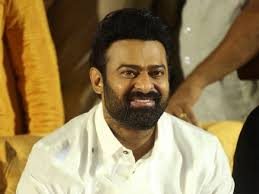

This is the main content of my website about prabhas
Uppalapati Venkata Suryanarayana Prabhas Raju ([pɾabʱaːs] born 23 October 1979), known mononymously as Prabhas, is an Indian actor who predominantly works in Telugu cinema. He is one of the highest-paid actors in Indian cinema and has been featured in Forbes India's Celebrity 100 list since 2015. Referred to in the media as the "Rebel Star", he has appeared in over 20 films, and has received seven Filmfare Awards nominations, a Nandi Award, and a SIIMA Award.
